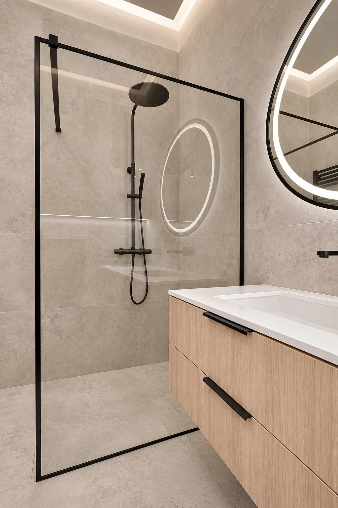
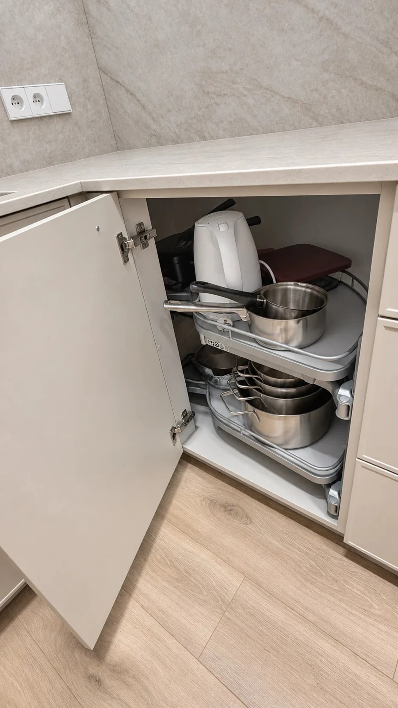

Kto do nas przychodzi i z czym
Zwykle zgłaszają się same osoby starsze. Najczęściej przeprowadzają się z domu na wygodne osiedle, bo nie potrzebują już tak dużej przestrzeni, a opieka nad dużym domem przekracza ich fizyczne możliwości. Chcą mieć niewielką powierzchnię, łatwą do ogarnięcia, zwykle na jednym poziomie. Zdarzają się też dzieci, które chcą zrobić remont u rodziców i od razu myślą o rozwiązaniach wygodniejszych dla starszych osób.
Czym taki projekt różni się od zwykłego
Wygodą. W takim projekcie około 90 procent to właśnie wygoda i to ona jest pierwsza w kolejności. Moda jest na końcu.
Układ i poruszanie się po mieszkaniu
Myślimy o progach, o szerokości przejść i o tym, żeby nic nie stało na drodze.
Łazienka: tu liczy się najwięcej
Prysznic zamiast wanny. Do wanny po pewnym czasie trudno wejść. Najlepiej bezprogowy prysznic z łatwym wejściem i antypoślizgowym brodzikiem.
Uchwyty pod prysznicem, bo czasem komuś może zakręcić się w głowie. Ewentualnie siedzisko.
Baterie montowane nie za wysoko i łatwe w obsłudze. Nie chodzi o designerskie rozwiązania, tylko o to, żeby namydloną ręką łatwo było zmienić temperaturę albo ciśnienie wody, z czym starsze osoby często mają kłopot.
Oświetlenie pod prysznicem, żeby wszystko było dobrze widać.
Światło nocne, bo osoby starsze często korzystają z toalety w nocy.


Kuchnia
Wysokość blatu dopasowujemy do wzrostu osoby, która będzie z niej korzystać, a starsi ludzie z reguły nie są już wysocy. Szafki mają być łatwo dostępne, bez nurkowania w głąb: dlatego dobrze sprawdzają się szuflady i wysuwane systemy w narożnikach, takie jak LeMans, do których nie trzeba się schylać ani grzebać. Wysoko nie umieszczamy żadnych szafek ani ważnych elementów. Jeśli szafki wysokie są potrzebne, dokładamy małą, wygodną drabinkę, żeby nikt nie musiał wchodzić na krzesło albo stołek.


Bardzo ważne są uchwyty. Osoby starsze często mają reumatyzm albo artretyzm, więc nie ma mowy o uchwytach frezowanych. Potrzebne są wygodne, solidne uchwyty, które łatwo otworzyć. A oświetlenie musi być po prostu bardzo porządne i we właściwych miejscach, bo wzrok z wiekiem bywa słabszy.


Ostatnio projektowałyśmy kuchnię dla klientki z rozrusznikiem serca. Płyta indukcyjna nie wchodziła dla niej w grę, więc zastosowałyśmy zwykłą płytę elektryczną. Jeśli ktoś ma rozrusznik, warto zapytać o to lekarza.
Podłogi i materiały
Podłogi antypoślizgowe, łatwe w utrzymaniu w czystości i bez progów, które bywają niebezpieczne. Uważamy też na dywany, o które można się potknąć, i zwykle ich unikamy.
Światło
Planujemy je tak, żeby było bezpiecznie i wygodnie: jaśniejsze, mocniejsze na drodze do łazienki, z czujnikami ruchu i z nocnym światłem. I jedna ważna rzecz: nie przekombinować liczby włączników. Gdy jest ich tyle, że nie wiadomo, który co włącza, osoba starsza się gubi. Wszystko ma być intuicyjne i łatwe do zapamiętania, to klucz do sukcesu.
Meble
Wysokość łóżka powinna być wyższa, bo z niskiego łóżka bardzo trudno wstać. Fotele wybieramy z podłokietnikami. Meble kuchenne i szafy robimy na wymiar, żeby zmieściły wszystkie najpotrzebniejsze akcesoria.
Najczęstsze błędy
Wybór wyłącznie pod modę.
Pomijanie bezpieczeństwa.
Zbyt małe przejścia.
Jedna rada dla dzieci, które urządzają mieszkanie rodzicom
Nie sugerujcie się modą. Wygoda jest najważniejsza, bo od niej zależy późniejsza łatwa opieka i pomoc. Pamiętajcie też o własnym komforcie: jeśli rodzice będą starsi, będziecie do nich częściej przyjeżdżać i oferować pomoc, więc mieszkanie ma być wygodne dla obu stron.
Zdjęcia pochodzą z naszych realizacji, część po obróbce cyfrowej.
Planujesz mieszkanie dla siebie albo dla kogoś bliskiego? Napisz do nas, odpowiemy w ciągu 2 dni roboczych. Pierwsze spotkanie jest bezpłatne. Umów spotkanie.